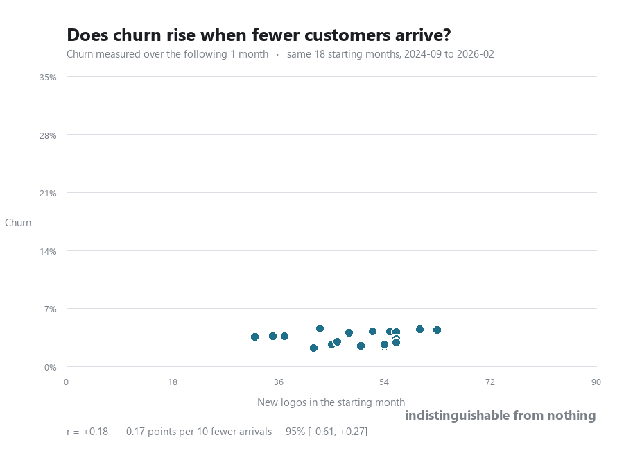

What changed, in five charts
Read in order. The first four narrow it down; the last one is what is left.
1 It is not that cohorts decay faster than they used to. Line the intakes up by age and the three years sit within a few points of each other. A customer won in 2026 leaves at about the rate one won in 2024 did.
What this means
Retention work aimed at new customers is aimed at the wrong thing. An intake won today decays about as an intake won two years ago did, so there is no recent break in onboarding or product to go and find. The erosion visible elsewhere on this page is in the standing base, including customers a cohort curve never reaches.
2 But count the money and every year is worse than it looked, the newest one by a lot. The same cohorts, with each customer capped at what they were paying when they arrived, so the line falls both when a customer leaves and when one stays on less than they came in on, and expansion cannot lift it. At month 6 the 2026 intakes still have 79% of their customers and 60% of their revenue. The equivalent gap was 3 points in 2024 and 7 in 2025. Most of it is not departures at all: it is accounts downgraded, many of them all the way to zero, that are still sitting in the base as live customers.
What this means
The retention number the business runs on is the wrong one, and it has been getting wronger. Logo churn misses every dollar lost without a customer leaving, and that is now the larger half of the problem. Two things follow. Revenue retention replaces logo retention as the reported figure. And an account sitting at zero MRR gets either recovered or closed, because today it absorbs support, counts as a retained customer and pays nothing.
3 It is not that thin months are poisoning the base. Each frame is one starting month: how many customers arrived, against the share of the base gone a month later. Watch it build and the recent months land inside the same cloud as the early ones. Nothing about the relationship moved across the two years.
What this means
A quiet pipeline is not costing you customers elsewhere. The fear that thin months distract the team into losing accounts is not supported at any point in the two years, so acquisition and retention can be run as separate problems by separate owners without one being held hostage to the other.
4 And it is not hiding at a longer horizon. Give churn one month to happen or six and the cloud lifts without tilting. However long you wait, months with fewer arrivals do not churn more.
What this means
The same answer at every horizon means this is settled rather than merely unproven. Waiting longer for the effect to appear will not help, so nothing further should be spent looking for it.
5 What changed is the price of a customer. Cut every cohort at the same age so none of the slope is the calendar. What a customer returns has barely moved. What one costs has roughly doubled, and that is the whole of it.
What this means
The lever is acquisition cost, not retention and not upsell. What a customer returns has barely moved; what one costs has roughly doubled, and that alone accounts for the fall in the ratio. Cutting cost per logo back toward its earlier level restores the unit economics at today's retention, without a single customer behaving differently.
The second lever is price, and it is the one with room left in it. See below.
So should the price have been fixed, or skimmed?
Fixed, and higher, and sooner. A single price near the top of the range you have actually charged beats both the gradual climb you ran and a skim that starts high and comes down. That holds at every level of price sensitivity worth testing, including ones far more elastic than anything in the data.
What a price buys you, besides the price
Every strategy, at every price sensitivity worth testing
Why skimming comes second rather than first
Skimming is not a bad strategy in this data. Starting at $1,300 and working down beats the gradual climb that actually happened, at every elasticity tested, because it collects the high price from the customers who would have paid it. It loses to a flat high price for one reason: every month it spends coming down locks in a cohort at the lower price, and cohorts do not re-rate. The customers it picks up on the way down pay less and leave sooner, about 2.3 months sooner over a year for every $1,000 of price given up, so the later half of a skim is buying the worst customers at the worst price.
The clear loser is the opposite move. Never raising the price at all finishes last at every elasticity, and by a wide margin. Whatever else is arguable here, the decision to raise price was right; the argument is only about how fast and how far.
What has to be true, and what we controlled for
- Price sensitivity is not identified. Volume against price gives an elasticity of −0.20, which does not clear significance, and adding a time trend flips it to +0.14. So the model sweeps elasticity from 0 to −1.0 rather than picking one. Fixed and high wins at all of them.
- Price rose with time, so era is a confound. The band comparison is repeated on 2025-08 onward alone, where the whole range was being charged at once. The ordering survives.
- Acquisition cost is held flat. Cost per logo has no relationship to price in this data, so a pricing choice is assumed not to move it. If selling dearer customers costs more, the advantage narrows.
- The first-month charge is removed. Until mid-2025 it was booked as MRR and reversed the next month. Price here is the customer's MRR in their second month, which is comparable across the whole window.
- Selection is the one we cannot control. A customer who pays more is usually a larger business, not the same business charged more. This says the customers you win at higher prices are better, not that raising a given customer's price would make them stay. That distinction is the reason this is a direction to test rather than a number to adopt.
- Only prices actually charged are observed, roughly $440 to $1,500. Above about $1,500 the sample is 17 customers and looks worse, but it is too thin to read either way. The recommendation stops at the edge of what has been tested.
The directional suggestion
Set one price in the $1,100 to $1,300 band and hold it, rather than climbing toward it. Do not skim. The thing worth spending on next is not another price change but the experiment that would settle this properly: quote a higher price to a randomly chosen share of new prospects for a quarter, and measure the close rate. That is the one number this data cannot supply and the whole argument rests on.
1. LTV:CAC by cohort, at equal age
2. Expected payback by cohort
3. Cumulative gross profit against cost, by cohort age
4. Blended retention curve, logos against revenue
5. Monthly logo churn rate
6. Retention at months 3, 6 and 12, by cohort
One line per age, against the month a cohort started. A cohort joins a line only once that age is behind it, so the lines end at different points and the right hand end of each is the newest cohort old enough to be judged. Retention here is survival: once a customer has gone they stay gone, so a line can only fall.
7. Cost per logo against revenue per logo
8. Retention curve by era, logos kept
9. The same cohorts, gross revenue kept
10. Monthly logo flows
11. Logos kept, this year against last year
12. Revenue kept, same customers and same windows
13. Price at signup against volume
14. What each price band actually returns
15. Onboarding: how many are charged, and how much
16. How a month starts: start type mix
17. Break-even month by cohort
Forward churn
A cohort curve follows one intake as it decays. These follow the whole base from a standing start: take everyone active in a month, and see how many are still there some months later. That is the number that moves revenue, and it can be asked of every month rather than only of new arrivals.
18. Forward survival, from every starting month with a full window
19. Survival by starting month
20. Customer Success capacity against churn
21. Is either relationship moving?
22. Does churn rise when fewer customers arrive?
The same questions, animated
Some questions above have a dimension that will not fit in one frame. These hold both axes fixed and move only the thing being varied, so a point that shifts has really shifted rather than being rescaled. They are redrawn from the data on every push, so they cannot fall behind the page.
23. Churn against arrivals, one to six months

The cloud lifts as the horizon lengthens. What it does not do is tilt enough to matter: the steepest setting, six months, correlates at −0.40 on eighteen starting months, which is t = −1.75 and does not clear significance. Churn accumulates, and it accumulates about equally across the whole range of intake volumes. On axes that rescaled each frame every panel would look much the same and none of that would be visible.
What acquisition costs
Every line the pipeline counts as acquisition, by month, with the logo count and the cost per logo underneath it. Partnerships is the one split line that reaches this total, at 100%; Customer Success is settled at 0% and Technical Account Manager sits in cost of sales, so neither appears.
24. The same, split by what customers pay

The two clouds overlap, and the paired test still separates them. Splitting each month at its own median puts higher payers below lower payers at every horizon, but the scatter hides it: almost all the spread you can see is between months rather than between the two halves within a month. The figures under the chart condition on the month, which is what the comparison actually rests on.
Each month is split at its own median subscription rather than at a fixed price, so a month is compared against itself and the steady rise in price across the window does not leak into the split. Same starting months and same axes as the chart above, so the only thing changing between the two is the split.
25. The same question, month by month

The recent months land inside the same cloud as the early ones. This is also the chart that shows how the scatter is built: one frame per starting month, each point being that month's arrivals against the share of its customers gone one month later. Chart 21 draws every month at once, so nothing on it says which came first and a relationship that had changed would be invisible. Adding them one at a time shows that none of the last two years' starting months sits apart from the rest.
One frame per starting month, each new point marked and the ones before it faded by age. Churn is measured over the single month after each starting month, which is the shortest and most legible version of the question: this animation is here to show how the scatter is assembled, and one step is easier to follow than four. Chart 23 asks whether the answer survives a longer wait, across all six horizons at once. The axes are set once from every point and never move, so a point that looks extreme is extreme against the whole period rather than against the handful drawn so far. The correlation in the subtitle is recomputed on the months drawn, which is why it wanders early and settles as the sample fills.